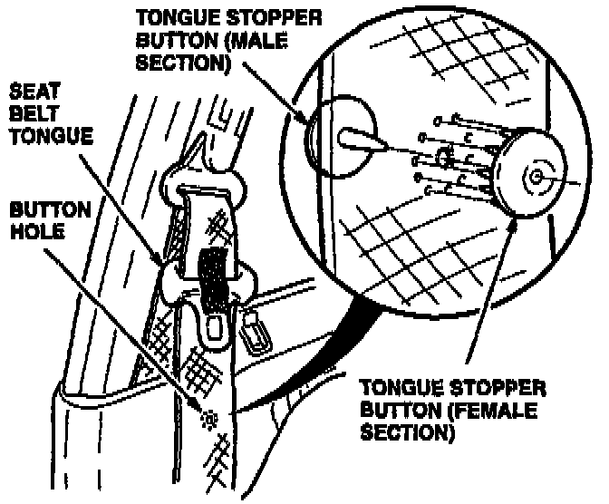
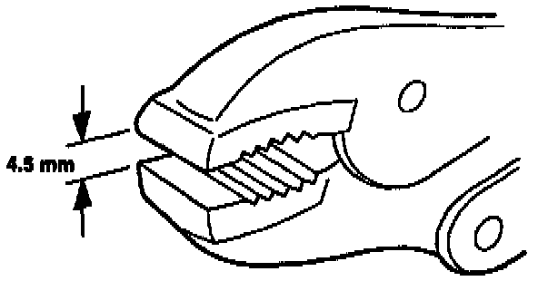
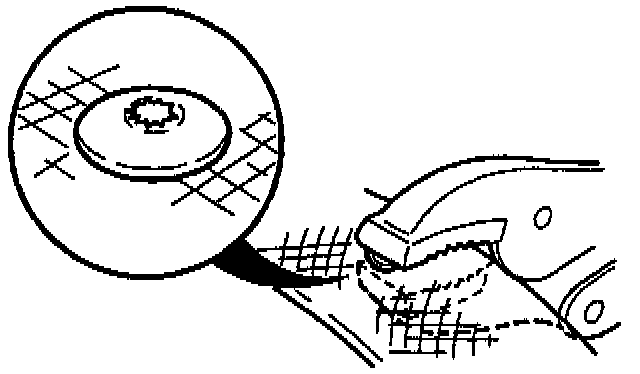

Seat Belt - Broken Tongue Stopper Button
June 11, 1996BULLETIN NO.
93-015
VIN APPLICATION
ALL
MODEL
ALL
YEAR
1992 and Later
Broken Seat Belt Tongue Stopper Button
(Supersedes 93-015, dated October 19, 1993)
PROBLEM
The seat belt tongue stopper button is broken, allowing the tongue to slide down to the floor.
CORRECTIVE ACTION
Install a new seat belt tongue stopper button listed under PARTS
INFORMATION.

1. Slide the seat belt tongue up the seat belt past the tongue stopper button hole. Temporarily secure the seat belt tongue to the belt fabric with masking tape.
2. Insert the male section of the button through the hole in the belt fabric. Align and install the female section of the stopper to the male section.

3. Preset the closed gap on a pair of vise-grip pliers to 4.5 mm.

4. Place the flat portion of the jaws over the tongue stopper, and squeeze until the vise-grip jaws lock and deform the stopper shaft.
PARTS INFORMATION
Seat Belt Tongue Stopper:
Color Part Number
Black 04814-SP0-305 ZA
Red 04814-SP0-305 ZB
Taupe 04814-SP0-305 ZC
Ivory 04814-SP0-305 ZD
WARRANTY CLAIM INFORMATION
Warranty Coverage:
Seat belts that fail to function properly during normal use are covered under warranty for the useful life of the car.
Warranty Does Not Cover:
^ Malfunction due to abuse, alteration, accidental damage or damage resulting from a collision or misuse.
^ Replacement of a properly functioning seat belt for cosmetic or comfort reasons.
Operation number: 854125
Flat rate time: 0.2 hour
(one or two sides)
Failed P/N: 04814-SP0-A02ZA
Defect code: L18
Contention code: A02